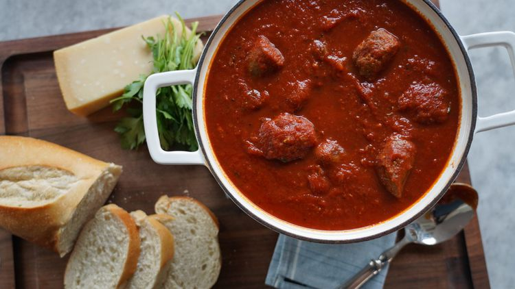

Credit: Allrecipes
Start this sauce on Sunday morning and fill your kitchen with amazing aromas that will have your family asking when dinner's going to be ready! It's full of rich, sweet tomato flavor, subtle herbs, and savory, tender meat that's cooked right in the sauce. Ladle it over your favorite pasta and serve with buttery garlic bread.
Gather all ingredients.
Sprinkle neck bones on all sides with salt and pepper.
Heat 4 teaspoons oil in a large, heavy-bottomed stockpot or Dutch oven over medium-high heat.
Place neck bones in the pot and cook for 6 minutes, flipping halfway through.
Transfer to a plate.
Add sausage links to the drippings and brown for 3 minutes on each side, adding remaining oil as needed.
Set aside with the pork.
Add onion to the drippings and season with salt.
Cook, stirring often, until onion is soft and translucent, about 5 minutes.
Add garlic and cook until fragrant, about 1 minute.
Stir in tomato paste and cook for 1 minute.
Add tomato puree and crushed tomatoes, than add water and sugar; cook, stirring constantly, until smooth.
Add bay leaf.
Rub basil and oregano between your fingers to release the aroma and add to the sauce.
Slice sausages into large chunks and return to the pot with the neck bones; bring to a simmer, stirring occasionally.
Add meatballs, reduce heat to low, and simmer, stirring occasionally, for 4 to 6 hours.
Remove neck bones and bay leaf.
Remove any meat remaining on the bones, shred, and return to the sauce.